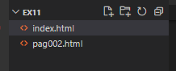

Você pode acessar o meu repositório público no GitHub
Você também pode acessar o meu Linkedin clicando aqui
Para inserirmos um link externo para que o usuário clique usamos a Tag A e entre as Aspas "" inserimos o endereço externo. Ponto Importante: Para o usuário clicar e não sobrepor em nosso site, temos que add as seguintes informações depois do link do Endereço target="_blank" rel="external">, pois só assim o link será aberto em uma nova guia.
Quando inserimos um link externo e que o site é desconhecido ou não sabemos a procedência, devemos inserir depois do link um código que visualmente não vai alterar nada no site, porém internamente impacta nos mecanismos de buscas e informamos que não temos ciencia da procedência daquele site,target="_blank" rel="nofollow">
Está é a primeira págian do site, se quiser pode acessar a Segunda página
Para inserir um link interno dentro do nosso proprio site, devemos utilizar o mesmo comando do externo usando a tag A, porém entre as "aspas" apertamos CTRL + Espaço e escolhemos o nome da pagina desejada. Lembrando que para isso já terimos que ter criado uma extensão de uma segunda página, por exemplo pag002.html
Para acessar a terceira página, clique aqui
Para disponibiliar arquivos para Download, usamos a TAG A e dentro das "aspas" inserimos o caminho de onde está o arquivo, depois disso adicionar dowload="" (Escrever o nome do arquivo nas aspas e . o formato, se for pdf dowload.pdf e o type = "application/pdf"